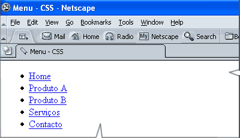

Técnicas de construção de menus
Neste tutorial abordarei as técnicas básicas para construção de menus utilizando CSS PURO.
O elemento HTML para construção de menus
Teoricamente qualquer elemento HTML capaz de descrever texto ( p,
h1, h2, ..., ul, ol, etc...) poderá ser estilizado para construção
de menus. No entanto, dentre todos eles, o elemento semanticamente correto e indicado e que maior flexibilidade,
recursos e facilidades propiciam a estilização são sem
dúvida aqueles elementos que definem as listas, quer sejam de definiçao dl, quer ordenadas ol quer ul que define as listas
não ordenadas e que usaremos neste tutorial .
Vantagens do uso dos elementos de listas
O uso do elemento ul ou outro elemento de lista, na criação dos menus com CSS tem as principais vantagens listadas abaixo:
- Quando renderizados sem CSS são consistentes;
- no código HTML do menu você tem
quatro elementos aninhados para aplicar estilos (quais sejam:
div - ul - liea) - isto aumenta a flexibilidade para estilizar; - os critérios de acessibilidade ao seu documento são mais consistentes - na visualização do documento sem a aplicação da folha de estilo o menu será exibido de uma forma bastante conveniente;
- com uso de uma só propriedade CSS (a propriedade display) você altera o layout de menu (em disposição vertical) para barra de navegação (em disposição horizontal);
- são facilmente expansíveis - acréscimo de itens no futuro, isto é novos links.
O código HTML típico para um menu
A seguir mostro o código HTML típico para a criação de um menu com 05 (cinco) links (adiante você verá que este código é válido para qualquer número de links, podendo ser adaptado a qualquer necessidade atual e previsão de expansão futura - tamanho do menu).Este código servirá de base para desenvolvermos todo o estudo proposto neste tutorial.
<div id="menu">
<ul>
<li>
<a href="caminho/arquivo1.html">Home</a>
</li>
<li>
<a href="caminho/arquivo2.html">Produto A</a>
</li>
<li><a href="caminho/arquivo3.html">Produto B</a>
</li>
<li><a href="caminho/arquivo4.html">Serviços</a>
</li>
<li>
<a href="caminho/arquivo5.html">Contacto</a>
</li>
</ul>
</div>Este código HTML é processado pelo navegador e apresentado na tela do computador conforme figura abaixo:

Com o código HTML pronto, nosso próximo passo é escrever uma folha de estilo em cascata capaz de dar a forma e o visual ao menu, para apresentá-lo na tela com as cores, efeitos e disposições do nosso projeto.
Na figura abaixo o projeto gráfico do nosso menu, conforme criado pelo webdesigner.
Nota: Não se trata de uma obra de arte sob o ponto de vista de design, mas a finalidade aqui e explorar os recursos do CSS :-)
Observe a figura e identifique os pontos marcados de 1 a 9:
- este é o elemento div com uma cor de fundo cinza claro;
- este é o elemento ul com uma cor de fundo preta;
- este é o elemento li com uma cor de fundo cinza escura;
- aqui um pequeno espaçamento entre os elementos li;
- estado mouse over, quando o mouse passa em cima do link, elemento a, em letra escura com fundo claro;
- uma borda no elemento div produzindo um efeito de baixo relevo;
- estado default do link (quando a página é carregada) elemento a em letra clara sob o fundo do elemento li;
- estado do link após ter sido visitado, elemento a em letra amarela clara sob o fundo do elemento li;
- uma borda no elemento ul produzindo um efeito de alto relevo.
Observe que neste gráfico fica bem caracterizado o aninhamento dos 04 (quatro) elementos HTML conforme foi citado no item "Vantagens do uso do elemento ul" acima.
As dimensões do menu e a identificação dos elementos HTML
Do projeto gráfico do menu já consolidado e com suas dimensões finais, identificamos os elementos HTML envolvidos e levantamos os dados para a estilização. Observe a figura abaixo:
A "caixa" mais exterior na cor cinza clara é o elemento
div;
Seguem-se as "caixas" dos elementos ul
(cor preta), li (cor cinza escura - 5 caixas)
e a (contém os 5 textos dos links) - nesta
sequência e aninhadas, e de acordo com o código HTML já
visto anterioriormente e abaixo:
Os dados a seguir, retirados do projeto gráfico servirão de base para criarmos a folha de estilo:
- O elemento
divtem 120 pixels de largura e sua altura varia com o número de links inseridos no menu. Possui ainda uma borda que confere um efeito de baixo-relevo. Entre o elementodive elementoulhá um espaçamento de 5 pixels; - O elemento
ultem uma borda que lhe confere um efeito de alto-relevo. Entre o elementoule elementolihá um espaçamento de 5 pixels; - O elemento
acontém o texto havendo um espaçamento ao redor deste texto.
A regra de estilo para o elemento div:
Antes de começar a estilização do elemento div,
vamos atribuir ID para o elemento. A div será menu e a sintaxe: #menu.
E as propriedades e valores
css do elemento div são:
- uma largura de 120px ====> width:120px;
- um fundo cinza claro ====> background:#999999;
- um espaçamento de 5px para ul
(igual em toda volta)====> padding:5px;
- uma borda simulando um efeito de
baixo-relevo (inset)====> border:3px inset #cccccc.
#menu {
width:104px;
_width:120px; /* hack para IE */
background:#999999;
padding:5px;
border:3px inset #cccccc;
}A aplicação dessa regra de estilo no elemento div resulta em exibição do menu no navegador, conforme mostrado na figura abaixo:
A regra de estilo para o elemento ul:
As propriedades e valores css do elemento ul são:
- uma largura de 110px ====> width:110px;
- um fundo preto ====> background:#000000;
- um espaçamento de 6px para li
(igual em toda volta)====> padding:6px;
- uma borda simulando um efeito de
alto-relevo (outset) ====> border:3px outset #cccccc.
- e aqui um macete: os navegadores quando renderizam listas reservam uma margem esquerda de 50px para os marcadores da lista. Como não queremos marcadores temos que eliminar a margem default declarando ====> margin:0px;
#menu ul {
widht:110px;
background: #000000;
padding:6px;
border:3px outset #ffffff;
margin:0; }A aplicação das regras de estilo nos elementos div e ul resulta em exibição do menu no navegador, conforme mostrado na figura abaixo:
A regra de estilo para o elemento li
As propriedades e valores css do elemento li são:
- vamos eliminar os marcadores de listas
(as bolinhas pretas em cada item de lista )====> liste-style: none;
- colocar um espaçamento em volta das tags <li>
( 5px à esquerda e à direita, 3px em cima e embaixo) ====> padding: 3px 5px;
- uma fundo cinza escuro ====> color:#666666;
- uma margem embaixo para obter espaço
entre
os itens da lista ====> margin-bottom:2px;
- e a definição do tipo e tamanho de letra ====> font: 12px verdana, arial, helvetica sans-serif;
#menu li {
list-style: none;
padding:3px 5px;
background:#666666;
margin-bottom:2px;
font: 12px verdana, arial, helvetiva, sans-serif;
}A aplicação das regras de estilo nos elementos div ul e li resulta em exibição do menu no navegador, conforme mostrado na figura abaixo:
Observe que faltando definir apenas, as regras para o elemento a, o nosso menu já assumiu o aspecto do projeto, exceto os links que estão com as cores e o sublinhado default:
A regra de estilo para o elemento a
Vamos estilizar três estados do link:
- link inicial quando a página é carregada
a: link, cor branca - sem sublinhado;
- link visitado
a: visited, cor beje - sem sublinhado;
- link com o mouse em cima
a: hover, cor preta - fundo branco;
- link clicado
a:active, não será estilizado!
#menu li a {
display:block;
color: #ffffff;
text-decoration: none;
}
#menu li a:visited {
color: #ffffcc;
}
#menu li a:hover {
color: #000000;
background-color:#ffffff;
}O código completo do documento HTML com o menu:
Aqui completamos as regras de estilo para o menu. Abaixo o código da página:
<html>
<head>
<title>Menu - CSS</title>
<meta http-equiv="...>
<style type="text/css">
#menu{
width:104px;
_width:120px; /* hack para IE */
background:#999999;
padding:5px;
border:3px inset #cccccc;
}
#menu ul{
widht:110px;
padding:6px;
margin:0;
background: #000;
border:3px outset #ffffff;
}
#menu li {
list-style: none;
padding:3px 5px;
background:#666666;
margin-bottom:2px;
font: 12px verdana, arial, helvetiva, sans-serif;
}
#menu li a {
display:block;
color: #ffffff;
text-decoration: none;
}
#menu li a:visited {
color: #ffffcc;
}
#menu li a:hover {
color: #000;
background-color:#fff;
}
</style>
</head>
<body>
<div id="menu">
<ul>
<li>
<a href="caminho/arquivo1.html">Home</a>
</li>
<li>
<a href="caminho/arquivo2.html">Produto A</a>
</li>
<li>
<a href="caminho/arquivo3.html">Produto B</a>
</li>
<li>
<a href="caminho/arquivo4.html">Serviços</a>
</li>
<li>
<a href="caminho/arquivo5.html">Contacto</a>
</li>
</ul>
</div>
</body>
</html>